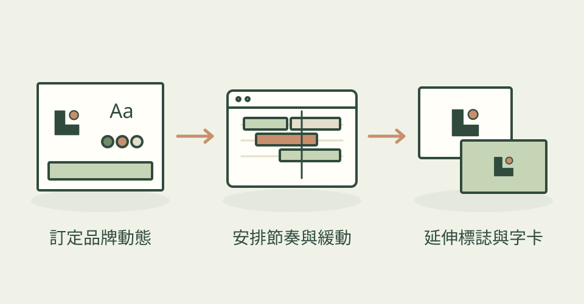

同一品牌的標誌開場、活動字卡與背景動畫，應該像同一個團隊做的。這套 Skills 先把品牌個性轉成緩動曲線、時間、進場順序與動作幅度，再讓每個畫面遵守共同規則。
它怎麼幫忙
九項技能涵蓋動作原理、配色、構圖、美術方向、After Effects、節拍剪輯、Remotion、標誌與背景動畫。可以只做 SVG／CSS 的網頁標誌，也能用 React 與 Remotion 製作資料驅動字卡；完整編碼前先檢查開頭、中段和結尾影格，核對字體、溢出文字與資料。
功能快速理解

由品牌方向訂定共用動作規則，延伸網頁與影片；本站功能示意，非作者案例。
功能示意・本站繪製 放大查看可以這樣開口
這是一個可依需求修改的委託範例。
替沉穩的科技品牌做三秒 Logo 開場，保留原標誌幾何與安全留白，字標依序現身，最後安定停住。先定一條緩動曲線與共用時間；減少動態模式顯示最終標誌，交付可修改 SVG／CSS。
適合什麼工作
適合品牌與動態設計師、製作發表會字卡或產品短片的前端開發者，以及需要維持一致轉場與節奏的小團隊。熟悉 SVG、CSS、GSAP、React 或 AE 其中一條路線會更容易使用。
開始之前
- 準備工具
- 依工作選工具：網頁標誌可用 SVG、CSS 與瀏覽器；MP4 可走 Node.js、React、Remotion 與渲染環境；AE 路線需 After Effects。檢查工具可能另用 shell、Playwright 或 ffprobe。
- 使用成本
- SVG／CSS 路線不強制使用付費生成 API，agent 用量另計。Skill 的 MIT 不代表 AE 或 Remotion 全部免費：AE 需付費方案，Remotion 依個人、公司規模等授權資格決定是否付費。iart.ai 商業平台不是這個 repo 的必要依賴。
- 交付內容
- 依路線交付品牌動態規格、SVG／CSS、React／Remotion 原始檔、AE 流程或 MP4
- 先留意
- 2026-10-26 首次收錄，專案建立與目前提交都在 6 月 22 日。這是動態設計方法與實作指引，並非免設定的自動成片服務。作者 GIF 是工具展示，不代表本站製作的品牌案例；本次沒有安裝、渲染或執行技能。
作者與來源
本文依作者公開說明整理，沒有實際執行這個專案。功能插圖由本站繪製，原作者範例另行標示；並非本站執行技能的測試結果。GitHub 星數為專案總量，觀察時間為 2026年10月26日 08:32（台北時間）。
首次收錄，尚無前次收藏量比較。